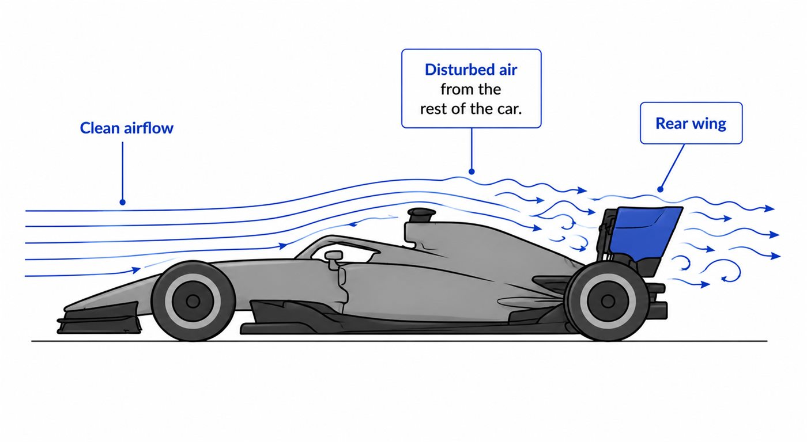
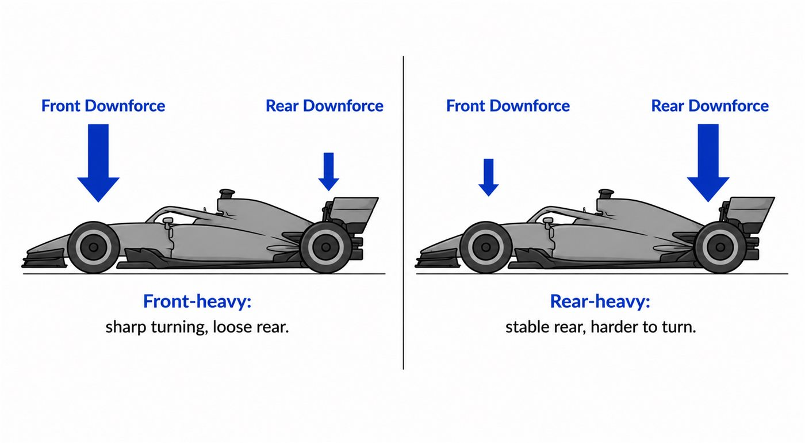
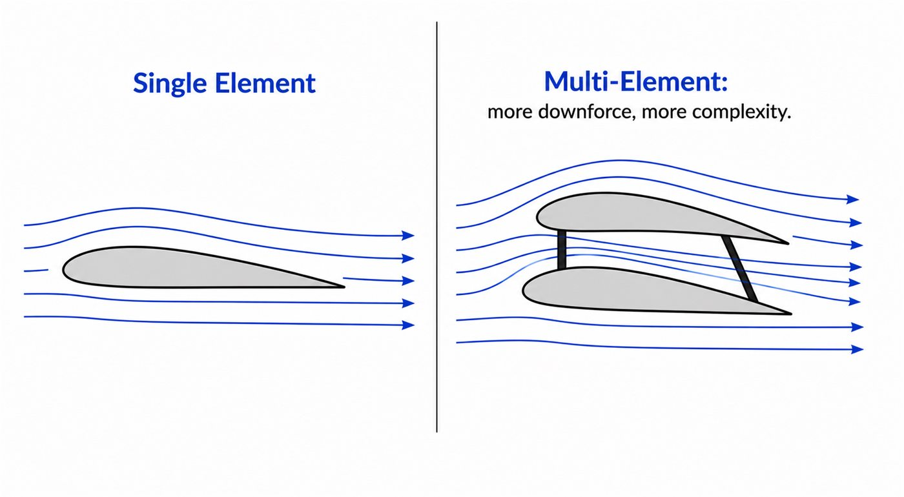
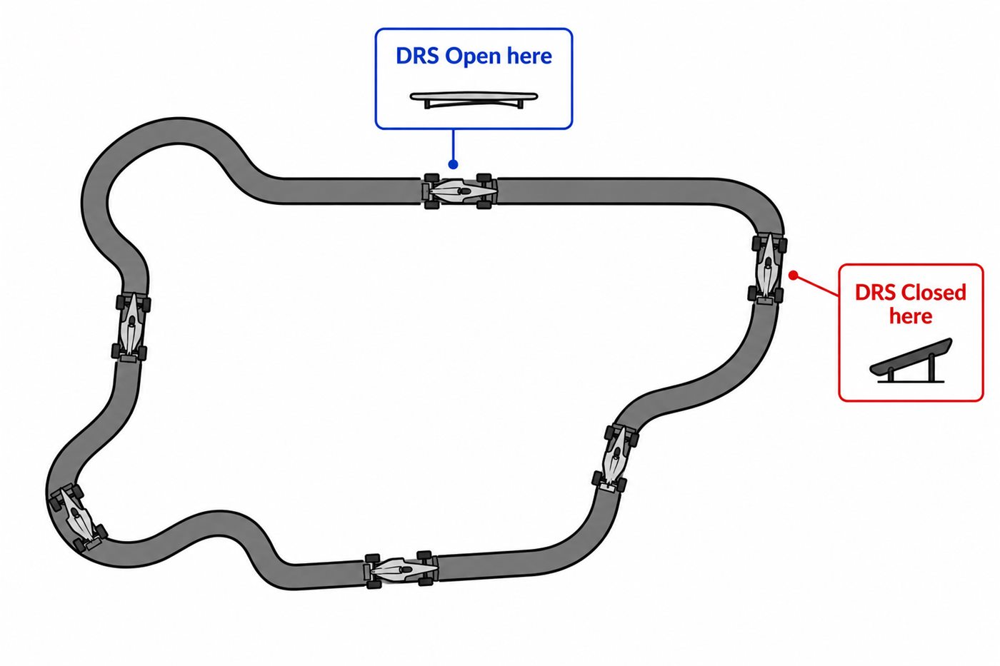

01 - CASE STUDY
Why the rear wing matters
The rear wing creates downforce at the back of the car, but it also changes the car's balance and straight-line drag.
It is one of the clearest places to see everything you have learned: pressure difference, chord, camber, angle of attack, downforce-versus-drag and efficiency.
02 - AIR ARRIVING AT THE REAR
The rear wing works in disturbed air
Unlike the front wing, the rear wing does not receive perfectly clean air. The air has already passed around the nose, tyres, cockpit, bodywork and engine cover.

03 - BALANCE
Front and rear downforce must agree
If the car has too much front load compared to rear, it can turn sharply but feel loose at the back. Too much rear load can make the rear stable but the front reluctant to turn.

04 - MULTI-ELEMENT WINGS
More than one wing surface
Real rear wings are often multi-element. A second element can help produce more downforce and keep flow attached better than simply making one huge element, though it adds complexity and drag.

05 - DRS
Borrowing speed on demand
DRS means Drag Reduction System. When the flap opens on a straight, the wing becomes effectively flatter, reducing drag and increasing top speed. Before a corner, it closes again to restore downforce.
06 - ONE LAP, TWO NEEDS
The car wants different wings in different places
On a straight, low drag is valuable. In a corner, grip is valuable. DRS is clever because it lets the car temporarily act like it has two rear-wing setups during one lap.

Smaller wing and DRS value top speed.
Larger wing helps the car survive corners.
Rear wing changes both lap time and handling feel.
07 - OPTIONAL 3D MODEL
Rotate a rear wing
This optional model helps you see the rear wing as a real three-dimensional part rather than only a side-view diagram.
Your browser cannot display the interactive model.
Model credit: F1 2021 Rear Wing by RoyalBlond, licensed under CC BY 4.0.
GO DEEPER
Books worth opening
Race Car Aerodynamics - Joseph KatzRear wing design, multi-element wings and aero balance.
Understanding Aerodynamics - Doug McLeanUseful for revisiting the real physics behind lift and downforce.
Official technical regulationsFormula 1 DRS rules are a great real-world follow-up once the idea clicks.
Finished this lesson? Mark it as complete to track your progress.